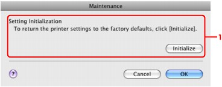
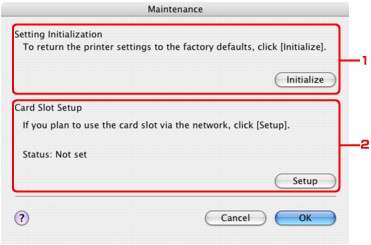

Important
Important-
Note that initialization erases all network settings on the machine, and printing or scanning operation from a computer over network may become impossible. To use the machine over network, refer to the setup manual of the machine to set up the machine again.
-
Start up IJ Network Tool.
-
Select the printer in Printers.
-
Select Maintenance from the Settings menu.
-
In Mac OS X v.10.6.x or Mac OS X v.10.5.x:
 -
In Mac OS X v.10.4.11:

-
Setting Initialization
- Initialize
-
Reverts all the network settings of the printer to factory default. Click Initialize to display the Setting Initialization dialog and click OK to initialize the network settings of the printer. Do not turn off the printer during initialization. Click OK when initialization is complete.
Performing initialization when connected over wireless LAN will break the connection, so refer to your setup manual of the machine to set up the machine again.
-
Card Slot Setup
Displays the status of the Card Slot and enables you to mount network drive. For details on how to mount the Card Slot as a network drive, see Using the Card Slot over a Network.
-
 Note
Note-
You can change the network settings of the printer using IJ Network Tool with USB connection after initializing the LAN settings. To change the network settings using IJ Network Tool, set Change wireless/wired in LAN settings under Device settings to Wireless LAN active or Wired LAN active on the Operation Panel.